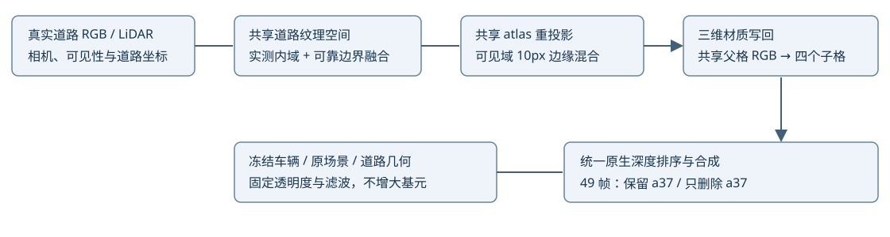
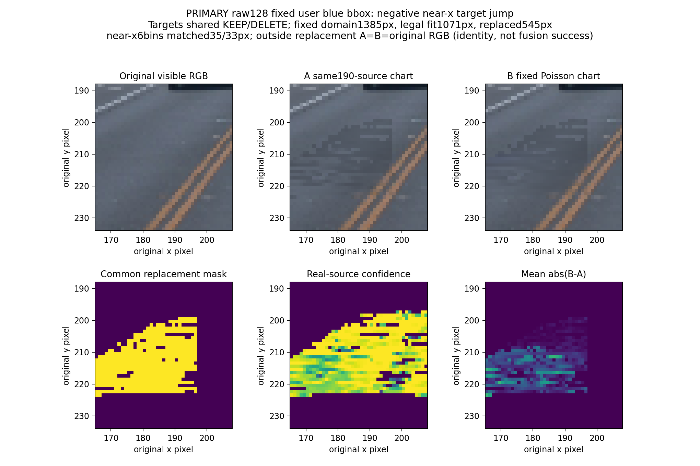
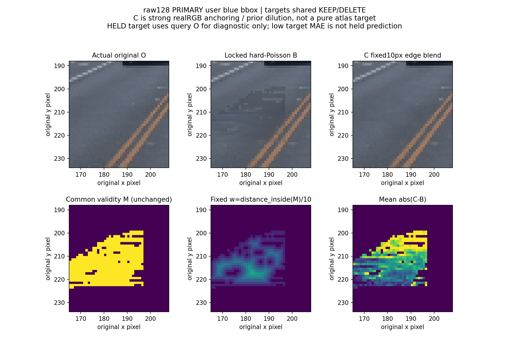
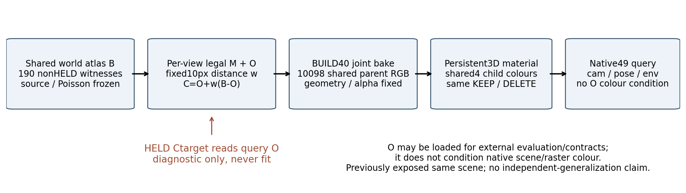

Scene008 · 同场景机制验证 · 2026-11-07道路融合目标 → 持久三维写回
先在共享道路坐标中构造融合监督，再把结果拟合回同一份道路材质；最终画面仍由三维场景统一排序渲染。
蓝圈：颜色与横向衔接改善，近端仍开放
C的raw128/delete道路RGB MAE 0.029598→0.015966；全49横向277bins均值0.016715→0.009164。近端248bins仍0.009340→0.009739，原框6bins也回退，未宣称全部接缝解决。
车体与车轮：几何遮挡保持，剩余缺失未修
三组材料状态的深度、alpha、分组贡献均与冻结AA逐值一致；固定71条车轮诊断射线W变化为0。C没有新增压轮胎，也没有修好原6/7条严重缺失。车辆资产与轨迹未更新。
本轮组件与数据流

未融合与融合目标共用同190帧真实道路源、同训练掩码、同参数与预算。C额外用真实RGB做固定10px边缘锚定，视角掩码权重不等于单一世界纹理；推理仍只读取三维资产。
raw128原蓝框：颜色与近端接缝分开看
| 状态／指标 | 前轮AA | A 未融合 | B Poisson | C 10px混合 |
|---|
| keep / RGB MAE | 0.028255 | 0.026162 | 0.025730 | 0.014516 |
| keep / near-x残差跳变 | 0.007120 | 0.011609 | 0.010230 | 0.007785 |
| delete / RGB MAE | 0.029598 | 0.028348 | 0.028103 | 0.015966 |
| delete / near-x残差跳变 | 0.009794 | 0.016431 | 0.016021 | 0.011725 |
同原1385道路像素与固定near-x6bins（配对35/33像素），encoded RGB[0,1]；不同于下表世界patch。候选推理不读这些目标图。
全49世界patch：固定边界、双状态
| 状态／边界 | 支持帧／49 | 配对bins | 前轮AA | A 未融合 | B Poisson | C 10px混合 |
|---|
| keep / near_x | 47 | 248 | 0.008399 | 0.009916 | 0.008742 | 0.008709 |
| keep / lateral_y | 40 | 277 | 0.015085 | 0.020644 | 0.019428 | 0.008788 |
| keep / far_x | 0 | 0 | unsupported | unsupported | unsupported | unsupported |
| delete / near_x | 47 | 248 | 0.009340 | 0.011023 | 0.009919 | 0.009739 |
| delete / lateral_y | 40 | 277 | 0.016715 | 0.021840 | 0.020751 | 0.009164 |
| delete / far_x | 0 | 0 | unsupported | unsupported | unsupported | unsupported |
等配对bin均值；near47帧/248bins，lateral40帧/277bins；unsupported保留空值。A/B/C同40帧拟合，同190源；C额外用合法真实RGB锚定边缘。
C逐bin正反例数量
| 状态／边界 | C改善bins | C回退bins | 相等bins | 总配对bins |
|---|
| keep / near_x | 72 | 112 | 64 | 248 |
| keep / lateral_y | 146 | 108 | 23 | 277 |
| delete / near_x | 77 | 107 | 64 | 248 |
| delete / lateral_y | 147 | 107 | 23 | 277 |
不存在一个覆盖所有区域的总通过标签。完整分帧与最坏bin见独立review。
原观测域与车外保护
| 状态／原观测域 | 像素帧数 | AA RGB MAE | C RGB MAE | C较差帧／49 | 最差单帧均值Δ |
|---|
| keep / original_road | 1075281 | 0.016892 | 0.016522 | 1 | +0.00000384 |
| keep / protected | 6312448 | 0.015363 | 0.015299 | 7 | +0.00004418 |
| keep / a6_visible | 39308 | 0.055004 | 0.055004 | 0 | +0.00000000 |
| keep / a37_visible | 536128 | 0.014916 | 0.014916 | 7 | +0.00000010 |
| delete / original_road | 1075281 | 0.022237 | 0.021624 | 0 | -0.00008611 |
| delete / protected | 6312448 | 0.015838 | 0.015728 | 4 | +0.00002814 |
| delete / a6_visible | 39308 | 0.054961 | 0.054961 | 0 | +0.00000000 |
同一固定像素帧分母；删除后隐藏真值不在此。保护均值改善与逐帧回退并列。
方法与信息角色
| 组件 | 本轮实现／范围 |
|---|
| 道路源 | 190个非HELD FRONT原始道路见证；几何固定，不补新深度 |
| 共享chart | 13358节点；103可靠外halo边界；同帧见证梯度；固定λ=.04一次Poisson |
| 正式参数 | 2053个可监督父格RGB（6159标量）；8045父格保持初始字节；40392子格共享父色 |
| 正式预算 | 每组fresh相同基线；400 paired steps／10epochs／Adam .01；颜色[0,1] |
| C边缘权重 | w=clip(EDT(M)/10,0,1)，C=O+w(B−O)；BUILD w均值.186558，没有w=1像素 |
| C信息边界 | 真实可见RGB主导的启发式混合；完整C目标依视角有效mask，非纯worldatlas；推理不condition queryO |
| 编辑一致性 | 同一三维资产始终启用；删除只移除a37；统一原生Gaussian排序 |
| 新旧层 | 没有旧静态剪枝、opacity退役或legacy RGB优化；未声称无关层已经全部接管 |
A/B只改变atlas融合算子；C为看到硬切负证据后登记的唯一观测主导边缘控制，增量归因分开。
实际计算账本
| 阶段 | native前向 | native反向 | optimizer steps |
|---|
| 固定mask贡献资格 | 80 | 80 | 0 |
| 真实生命周期smoke／下一步重放 | 80 | 48 | 24 |
| A/B/C各400正式 | 2400 | 2400 | 1200 |
| 两轮49帧双状态配对评价 | 490 | 0 | 0 |
| 三份资产独立5帧×双状态重放 | 30 | 0 | 0 |
| 合计 | 3080 | 2528 | 1224 |
反向包含资格贡献读出；正式更新只到道路颜色。时间为worker窗口／渲染循环，非纯CUDA-event时长；所有smoke与必要恢复单列。
目标构造诊断（不是最终渲染）
展开 raw128 目标硬切负例与固定10px控制
B的共享chart在投影有效mask边缘仍会硬切；C额外用真实可见RGB锚定，因此目标更贴近原图。目标改善需要上方native渲染与固定边界指标确认。



方法边界与剩余问题
- C有道路颜色与横向边界的实际改善，近端边界仍回退；原V44与前轮AA入口保留，未替用户接受整场景画质。far边界缺配对分母，不能记成0。
- 横向均值改善不代表逐bin改善：DELETE lateral 147/277改善、107回退、23相等；near仍有107回退、77改善、64相等。
- C额外使用已有真实可见RGB做强边缘锚定；atlas平均权重约.1866，没有纯atlas内域。收益不能单独归因Poisson、预训练道路先验或未知纹理恢复。
- C的HELD9目标本身读入该query真实RGB，仅用于构造诊断；3D材质只在BUILD40拟合，native结果不condition queryRGB。既有场景此前已看过该clip，所有结果仍属同场景开发证据。
- raw128原蓝框1385道路像素包含545atlas替换＋840原RGB恒等目标，合法fit1071；near固定6bins配对35/33像素，目标含1个纯恒等bin与5个混合bin。该分母与全49世界patch分表。
- C车外保护均值改善，但KEEP7帧、DELETE4帧有回退，最差单帧均值Δ约+4.42e-5/+2.81e-5；不作逐像素无损保证。
- 三组共294个材料状态的alpha、深度、group/newroad/oldroad贡献与各自AA重放逐值一致；车辆预乘颜色保持。固定71条红侧射线W变化为0，原6/7条严重chart-first缺失仍在，隐藏轮胎真值未知。
- 原始A/B目标在有效性边界硬切，导致颜色均值下降但接缝回退；源atlas Poisson未自动解决投影mask衔接。C是看到此负证据后登记的唯一10px控制，未尝试其它带宽。
- 一次Poisson解的60节点/131通道出现负值裁剪，最大方程残差由约2e-15变为.008007，原始解和裁剪收据保留；没有重调解算参数。
- 完整checkpoint在恢复起点逐位一致；续步参数也一致，但少量Adam moment有约1e-14/1e-22量级原子累加差异，未冒称续步moment逐位相同。
- 本轮仍是观测支持道路融合；学习型道路生成、严格空间盲化先验实验、R4决策泛化与MOG-2不透明首交渲染均未在本轮验证。
完整配置、目标/写回误差和分帧指标见下方证据。human_verdict 保持空值；不以单一均值替代道路接缝、车体保护和遮挡的分别验收。
证据与重放
完整现场、原模型和传感输入继续保留在AutoDL。轻量交付不等于全部原始数据备份。AutoDL保持开机。